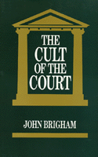

<body bgcolor="#FFFFFF" text="#000000" link="#0000FF" vlink="#CC0000" alink="#CC0000"><center><hr width="350" size="1" align="center" noshade>A fresh and innovative examination of the U.S. Supreme Court as the final arbiter of constitutional interpretation<hr width="350" size="1" align="center" noshade><p><a href="https://cdcshoppingcart.uchicago.edu/Cart/ChicagoBook.aspx?ISBN=9780877224860&&PRESS=temple" target="_top">Buy this book!</a> | <a href="https://cdcshoppingcart.uchicago.edu/Cart/Cart.aspx?PRESS=temple" target="_top">View Cart</a> | <a href="https://cdcshoppingcart.uchicago.edu/Cart/Cart.aspx?PRESS=temple" target="_top">Check Out</a></p><p></p></center><!--none//--><h1>The Cult of the Court</h1>
<h3>John Brigham</h3>
<P>cloth 0-87722-486-2 $37.95, Jul 87, <FONT COLOR=#990033>Out of Stock Unavailable</FONT>
<br>paper 0-87722-828-0 $35.95, May 91, <FONT COLOR=#990033>Available</FONT>
<br>Electronic Book 1-43990-383-2 $35.95 <FONT COLOR=#990033>Out of Stock Unavailable</FONT>
<BR> 280 pp
</P><BLOCKQUOTE><I>"The book offers a brilliant and sophisticated analysis of the place the Supreme Court has earned for itself in the American political system."</I>
<br>&#151<b>C. Herman Pritchett</b><I></I></BLOCKQUOTE>
<p>In recent years widespread attention has been focused on decisions handed down by the Supreme Court that grapple with passionate issues: integration, school prayer, abortion, affirmative action. The appointment of new justices is a highly charged political event although the Court is supposed to be "above" politics. Amidst the bicentennial celebration of the Constitution and almost daily reports of major confrontations awaiting the highest court�s judicial review, John Brigham presents a fresh and innovative examination of the U.S. Supreme Court as the final arbiter of constitutional interpretation.
<p>Drawing on philosophy and anthropology, <I>The Cult of the Court</I> offers a social scientific investigation of an institution whose authority has come to be taken for granted. The author emphasizes that the Court is an institution and that its authority is founded less in the claim of legal expertise than in hierarchical finality&#151the assertion of political will, not of legal judgment. He shows how the Court has supplanted the Constitution as the authority in our political world and that what makes legal "sense" is affected by these factors of institutionalization, bureaucratization, and court-dominated constitutionalism.
<BR>&nbsp;<h2>Excerpt</h2><P>Excerpt available at <a href="http://www.temple.edu/tempress">www.temple.edu/tempress</a></p>
<BR>&nbsp;<h2>Reviews</h2>
<p><I>"Brigham's analysis of the Supreme Court is original and incisive. He focuses on the spectacular growth in the Court's power and prestige over the past two centuries, exploring the politics of institution building with sensitivity and finesse."</I>
<br>&#151<b>Doris Marie Provine</b>, Syracuse University
<p><I>"[This book] constructs an original framework to explore the legal, political, and social influences that have shaped modern judicial authority. Brigham rightly argues that future research needs to explore further the roots of modern judicial authority as well as current challenges to the Court. He provides us with a powerful original framework that links law and politics and addresses the postmodern context of current constitutional interpretation."</I>
<br>&#151<b><I>The Review of Politics</I></b>
<BR>&nbsp;<h2>Contents</h2><P>
<p>Introduction
<br>1. The Institution
<br>2. Ideologies of Authority
<br>3. The Cult of the Judge
<br>4. The Institutional Setting
<br>5. Court Business
<br>6. Practices in Action
<br>7. Authority and Policy
<br>8. Beyond the Legalist Paradox
<br>Appendix: Supreme Court Budget Requests
<br>Notes
<br>References
<br>Index
</P><BR>&nbsp;<H2>About the Author(s)</H2>
<P><b>John Brigham</b>, Professor of Political Science at the University of Massachusetts, Amherst, is the author of four other books, including <I><A HREF="720_reg.html" TARGET="_top">Property and the Politics of Entitlement</A></I> (Temple).</P>
<BR><H2>Subject Categories</H2>
<p><A HREF="/tempress/political.html" TARGET="_top">Political Science and Public Policy</a>
<BR><A HREF="/tempress/law.html" TARGET="_top">Law and Criminology</a>
</p>
<p align="center"><a href="https://cdcshoppingcart.uchicago.edu/Cart/ChicagoBook.aspx?ISBN=9780877224860&&PRESS=temple" target="_top">Buy this book!</a> | <a href="https://cdcshoppingcart.uchicago.edu/Cart/Cart.aspx?PRESS=temple" target="_top">View Cart</a> | <a href="https://cdcshoppingcart.uchicago.edu/Cart/Cart.aspx?PRESS=temple" target="_top">Check Out</a></p><p><font face="Arial" size="1"><a href="copyright.html" onMouseOver="window.status='Web Copyright Policy';return true;" onMouseOut="window.status=''" title="Web Copyright Policy">&copy;</a> 2015 <a href="http://www.temple.edu" target="new" onMouseOver="window.status='Link to Temple University home page';return true;" onMouseOut="window.status=''" title="Link to Temple University home page">Temple University</a>. All Rights Reserved. http://www.temple.edu/tempress/titles/506_reg.html</font></p>